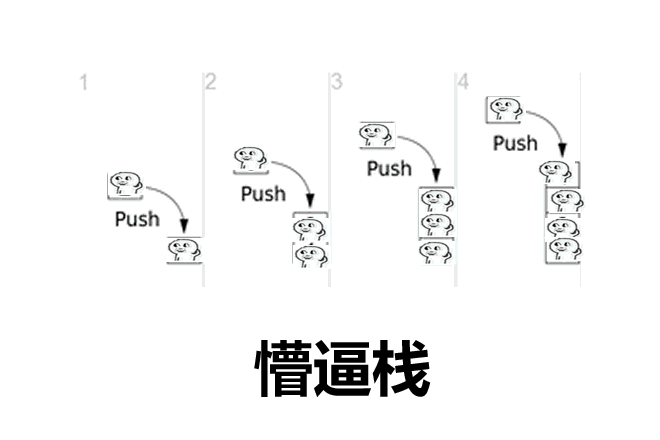

原文出处:本文由博客园博主juruo_zzt提供。
原文连接:https://www.cnblogs.com/juruo-zzt/p/11791921.html
原文连接:https://www.cnblogs.com/juruo-zzt/p/11791921.html
你还在为思路正确却TLE而烦恼吗？
我也没办法，谁让你是一枚蒟蒻呢

今天，本人给被TLE折磨的死去活来的各位介绍一个专治TLE的法宝:

此乃江湖一直流传着的
输入输出优化！！！
输入优化函数：
int Read()
{
int x=0,f=1;
char ch=getchar();
while(ch<'0'||ch>'9') {if(ch=='-') f=-1;ch=getchar();}
while(ch>='0'&&ch<='9') {x=x*10+ch-'0';ch=getchar();}
//也可以改成这样:x=(x<<3)+(x<<1)+(ch^48)，位运算更快一些
return x*f;
}//使用方法：x=Read();输出优化函数：
void Write(int n)
{
if(n<0) {putchar('-');n=-n;}
if(n>9) Write(n/10);
putchar(n%10+'0');
return;
}//使用方法：Write(x);注意！使用getchar()和putchar()要加头文件#include<cstdio>
什么？你问我如果还是TLE怎么办？
老老实实回去改算法吧......